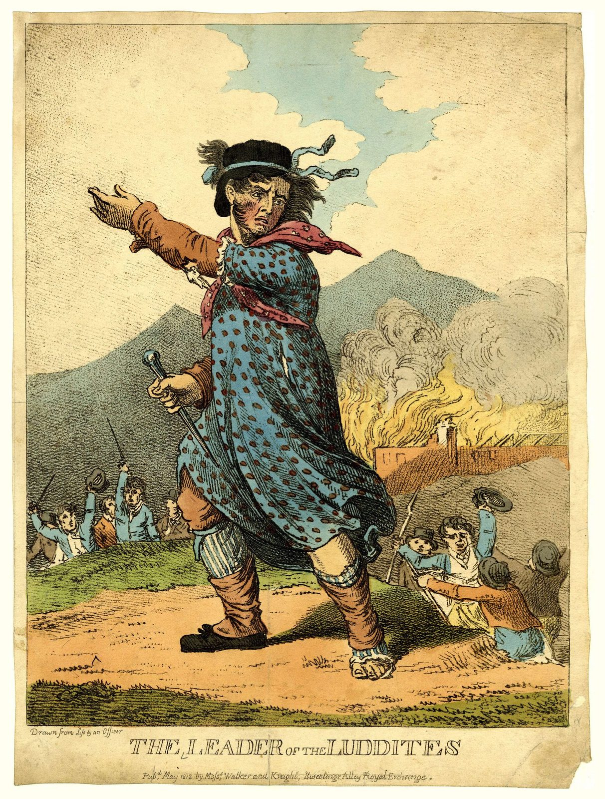
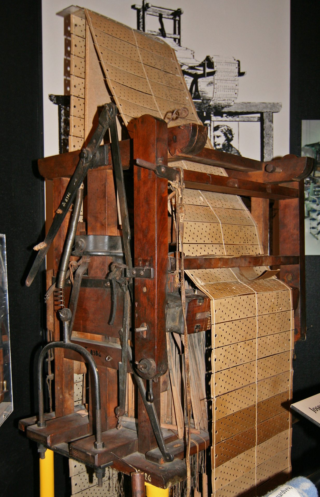

Central Questions
- What is work, and why does it matter to human life?
- What makes work meaningful — and why should meaningful work be ethically protected?
- How might AI transform — or threaten — the value we derive from work?
- Can AI do "real" work, especially creative work — or does genuine creativity require something AI cannot supply?
Part I: What Is Work?
In 1936, Charlie Chaplin released Modern Times, a film in which the Little Tramp is sucked into a factory conveyor belt and literally fed through the gears of an industrial machine. The image is funny precisely because it is also horrifying. The worker has become indistinguishable from a component — a bolt to be tightened, a widget to be moved. When a "feeding machine" is invented to eliminate the worker's lunch break, the satire sharpens into something close to philosophy: what does it mean for a human being to spend a life doing work that could just as well be done by a mechanism?
That question has grown more urgent, not less, in the decades since. The machines Chaplin mocked were powerful but dumb — they could tighten bolts faster than human hands but could not write a report, compose music, or design a building. Today's AI systems can do all of those things, at least in some sense of "do." To think clearly about what this means, we need to begin where serious thinking about work almost always begins: with Hannah Arendt.

Key Thinker
Hannah Arendt (1906–1975)
Hannah Arendt was a German-Jewish political philosopher who fled Nazi Germany in 1933 and spent eighteen years as a stateless person before finally obtaining U.S. citizenship in 1951. That experience of displacement and political vulnerability shaped everything she wrote. Her first major work, The Origins of Totalitarianism (1951), remains one of the most searching analyses of how democratic societies collapse into terror. Her masterwork, The Human Condition (1958), examined the fundamental activities that define what it means to be human — labor, work, and action.
In 1961, Arendt covered the trial of Nazi war criminal Adolf Eichmann for The New Yorker. Her report, later published as Eichmann in Jerusalem (1963), coined the phrase "the banality of evil" — the chilling observation that Eichmann was not a monster but a bureaucrat, a man who had ceased to think for himself and simply followed orders. The phrase was controversial; Arendt argued she was not diminishing the evil but making a more disturbing point: that it does not require demonic motivation.
For our purposes, the key contribution is her three-way distinction among labor, work, and action in The Human Condition. This framework gives us one of the most nuanced philosophical vocabularies for asking what, exactly, we lose — or might lose — when machines take over human activities.
Arendt's Three Activities
In The Human Condition, Arendt argues that there are three fundamentally different kinds of human activity, and that modern societies have systematically confused them. Understanding the difference is not merely an academic exercise — it is, she believed, essential to understanding what is at stake when we redesign the world of human effort.
Labor (Arendt)
The cyclical, repetitive activity required to sustain biological life — eating, sleeping, cleaning, cooking. Labor corresponds to our nature as mortal animals: its products are consumed almost as fast as they are made, and it leaves nothing permanent behind. Arendt associates this activity with what she calls animal laborans — the laboring animal.
Labor is the activity of the body maintaining itself. You cook a meal; it is eaten. You wash clothes; they are dirtied again. There is nothing wrong with labor — survival requires it — but labor by itself does not create anything that outlasts the immediate process. The Tramp on the assembly line is engaged in labor in Arendt's sense: his activity produces nothing that bears his mark, nothing that endures. He is, in her vocabulary, an animal laborans.
It is indeed the mark of all laboring that it leaves nothing behind, that the result of its effort is almost as quickly consumed as the effort is spent.
Hannah Arendt, The Human Condition (1958)
Notice the ethical force of this observation. A life spent entirely in labor — pure cyclical maintenance — never rises above the biological. It produces nothing that outlasts the laborer. Arendt is not contemptuous of labor; she is pointing out that the modern tendency to reduce all activity to labor (to productivity, to outputs, to things that can be measured and monetized) is a kind of impoverishment.
Work (Arendt)
The fabrication of durable objects — tools, buildings, artworks, institutions — that outlast the individual and constitute a shared human world. Work corresponds to our nature as world-builders; Arendt associates it with homo faber, the maker. Unlike labor, work has a definite beginning and end, and leaves something behind.
The carpenter who builds a chair, the architect who designs a library, the programmer who writes an algorithm that thousands of people use — all of these are engaged in work in Arendt's sense. They create objects that enter the world, persist beyond their makers, and become part of the shared environment in which future generations live. This is why Arendt thinks work has a dignity that mere labor lacks: work is how human beings leave traces in the world, how they participate in a civilization larger than themselves.
Arendt's third category — Action — is the realm of politics and human relationships: the self-disclosure that happens when we speak and act in public with others. Action is where we reveal who we are, not just what we do. It is the most distinctively human activity and the one most threatened by modern political structures. For our purposes in this chapter, we will focus mainly on the labor/work distinction, which maps most directly onto questions about AI and automation.
animal laborans
Cyclical • Consumed • Leaves nothing behind"] -->|"raises to"| B["🔨 Work
homo faber
Durable • World-building • Creates objects"] B -->|"transcends to"| C["💬 Action
bios politikos
Self-disclosure • Politics • Reveals who we are"]
The Luddites and the Historical Anxiety
Anxiety about machines taking human work is not new. Beginning in Nottinghamshire in 1811 and spreading through the Midlands and the north of England until about 1816, textile workers systematically destroyed the new machinery — wide stocking frames, shearing frames, and power looms — that was displacing their skilled trades. These workers, called Luddites after the probably legendary Ned Ludd (invoked in their letters as "King Ludd" or "General Ludd"), were not technophobes. They were skilled craftsmen whose livelihoods were being eliminated, whose craft knowledge was being rendered worthless, and whose communities were being broken up, and their target was not machinery as such but machinery used to undercut trained labor. The British state responded by making machine-breaking a capital offense; leaders were hanged or transported. Their protest was a desperate response to what we would now call deskilling: the transformation of work into labor, of skilled making into repetitive tending. The modern use of "Luddite" to mean "person who fears technology" inverts what the original Luddites actually argued.

The mechanization of weaving had an interesting afterlife. A closely related machine — the Jacquard loom of 1804, which used punched cards to control the pattern being woven — directly inspired Charles Babbage's thinking about his Analytical Engine, and Ada Lovelace's famous notes on that machine. As Lovelace put it, the Analytical Engine "weaves algebraical patterns just as the Jacquard-loom weaves flowers and leaves." The very technology that eliminated skilled weaving became a conceptual ancestor of the computers that now threaten to automate knowledge work. History rhymes.

Self-Determination Theory: Why Work Satisfies Us
Philosophers like Arendt give us a framework for distinguishing types of activity. Psychologists give us evidence about what happens to human beings when those activities are frustrated. The most influential psychological account of what makes work meaningful is Self-Determination Theory (SDT), developed by Edward Deci and Richard Ryan over several decades of empirical research.
SDT proposes that human beings have three fundamental psychological needs that, when satisfied, produce flourishing and well-being, and when frustrated, produce alienation, anxiety, and diminished motivation. Crucially, these needs can be satisfied or frustrated at work — which is one major reason why work matters to human life beyond its economic function. Some researchers in this tradition argue for a fourth ingredient, beneficence: the sense that what you do actually benefits someone else. That addition matters for our purposes, because a job can offer real autonomy and real skill and still feel hollow if it contributes nothing to anyone.
| Need | What It Means | Satisfied by… | Frustrated by… |
|---|---|---|---|
| Autonomy | Acting from one's own values and choices, not external compulsion | Creative freedom, meaningful choice in how to do one's job | Micromanagement, algorithmic surveillance, rigid scripts |
| Competence | Developing and exercising genuine skills; meeting challenges | Mastery experiences, learning, challenging problems | Deskilling, repetitive tasks, tools that do the thinking |
| Relatedness | Feeling meaningfully connected to others | Collaborative work, care relationships, shared purpose | Isolation, remote-only interaction, treating workers as interchangeable |
The SDT framework explains why "having a job" is not automatically the same as having meaningful work. A job that frustrates autonomy (you follow a rigid script), competence (you perform the same three motions all day), and relatedness (you work alone and are tracked by sensors) can be deeply alienating even if it pays well. The Tramp on Chaplin's assembly line has a job. He does not have meaningful work.
What's the Argument?
The Meaningful Work Argument
- Human beings have deep psychological needs for autonomy, competence, and relatedness (Self-Determination Theory).
- Meaningful work — work that involves genuine skill, choice, and human connection — is one of the primary means by which these needs are satisfied.
- When these needs are chronically frustrated, human well-being is seriously diminished.
This argument does important work. It shifts the ethical focus from jobs (economic units) to meaningful activity (human flourishing). An AI system that eliminates dull, repetitive labor while opening space for skilled, creative activity might be ethically beneficial even if it reduces total employment — because it increases the total amount of meaningful human activity. Conversely, an AI system that "creates jobs" while stripping those jobs of genuine skill, autonomy, and social connection might be ethically harmful even if unemployment falls.
Thought Questions
- Think of a job you have held or observed closely. Which of Arendt's categories — labor, work, or action — best describes what it involved? Was there a mix?
- The Luddites are now a byword for irrational resistance to progress. Is that characterization fair, given what you know about what they were actually protesting?
- SDT suggests that autonomy, competence, and relatedness are universal needs. Do you think this is true across cultures? Can you think of cases that challenge it?
- Is there a difference between work you find meaningful and work that is meaningful? Who gets to decide?
Part II: Why Is Meaningful Work Ethically Valuable?
So far we have established that meaningful work satisfies deep psychological needs. But satisfaction of needs is not the only thing ethics cares about. We need to ask whether meaningful work is valuable from a broader ethical perspective — and if so, why. Three major ethical frameworks each give a different answer, and together they make a formidable case.
| Framework | Key Value | Why Meaningful Work Matters | Concern About AI Automation |
|---|---|---|---|
| Utilitarianism | Maximize overall well-being | Meaningful work is a major source of happiness and life satisfaction for most people | Automation could reduce total well-being even if it raises GDP |
| Deontology (Kant) | Respect persons as ends in themselves | Using people as mere instruments of production violates their dignity | Treating workers as interchangeable inputs to be optimized fails to respect their humanity |
| Virtue Ethics | Human flourishing through the exercise of virtues | Work is a primary site for developing excellence, practical wisdom, and character | Deskilling removes the challenges through which virtues are cultivated |
What's the Argument?
The Utilitarian Argument for Meaningful Work
- The goal of social policy is to maximize overall well-being across society.
- Meaningful work is a major source of well-being for most adults — providing purpose, social connection, structure, and identity.
- Automating meaningful work without replacement could significantly reduce overall well-being, even if it increases economic output.
What's the Argument?
The Deontological Argument for Meaningful Work
- Persons have dignity — they are ends in themselves, not merely means to others' ends (Kant's Formula of Humanity).
- Work that reduces a person to a cog in a machine — monitoring their every motion, eliminating all judgment, treating them as interchangeable — treats them as a mere means.
- We have a moral duty not to treat persons as mere means.
What's the Argument?
The Virtue Ethics Argument for Meaningful Work
- Human flourishing (eudaimonia) consists in the exercise of distinctively human excellences — practical wisdom, creativity, justice, courage.
- Meaningful work — work that involves genuine skill, problem-solving, and craft — is a primary arena in which these excellences are exercised and developed.
- Activities that remove challenge, judgment, and skill from work undermine the conditions for human flourishing.
These three arguments are independent of one another, which is part of what makes them formidable. You do not have to be a utilitarian, or a Kantian, or a virtue ethicist to have a reason to care about the quality of work: each tradition arrives at that conclusion by its own route. Where they differ is in what they would count as a fix. The utilitarian will accept almost any trade-off if the aggregate numbers come out right; the Kantian will not accept degrading work at any price; the virtue ethicist is less interested in the transaction than in what kind of people the work is producing over a lifetime.
Thought Questions
- The three arguments converge on the same conclusion from different starting points. Does that convergence make the conclusion more credible, or does it just mean the conclusion was popular enough that each tradition found a way to reach it?
- The utilitarian argument treats meaningful work as valuable because of the well-being it produces. If a pill or a piece of software could produce the same well-being without the work, would the utilitarian have to say the work no longer matters?
- Kant's Formula of Humanity forbids treating people as mere means — it does not forbid using people as means at all. Every employer uses employees as a means to producing something. Where, concretely, would you draw the line?
- Try to steelman the opposite view: what is the best case that work is simply a way of earning a living, and that loading it with expectations about meaning and virtue is a mistake — perhaps even a convenient one for employers?
Marx on Alienation
Before the virtue ethics tradition was revived in philosophy, the most systematic analysis of what work does to workers came from Karl Marx. Writing in the mid-nineteenth century — precisely when industrial capitalism was transforming labor — Marx developed the concept of alienation that remains influential in debates about automation today. The relationship between Marx and Arendt is worth stating plainly: Arendt asks what work is; Marx asks what happens when work goes wrong. They also disagree about where the trouble lies. For Marx the decisive question is who owns the process and its products; for Arendt it is what the activity itself is. Two thinkers can agree that the assembly line is degrading and still disagree about what would fix it.
Key Thinker
Karl Marx (1818–1883)
Karl Marx was a German philosopher, economist, and revolutionary whose analysis of capitalism remains one of the most influential intellectual projects in modern history. Born in Trier, educated in Berlin and Bonn, he spent most of his adult life in exile, ultimately settling in London where he wrote his major works — including Capital (1867) — while supported financially by his collaborator Friedrich Engels. Marx saw himself as bringing scientific rigor to the study of social and economic structures, diagnosing the contradictions of capitalism with the same analytical precision that Darwin was applying to biology.
His early works, especially the Economic and Philosophic Manuscripts of 1844 (unpublished in his lifetime), contain his most sustained analysis of what industrial labor does to human beings — the theory of alienation. Marx argued that capitalism systematically separates workers from the products they make, from the activity of making, from their distinctively human nature, and from each other. Industrial production transforms an activity that should express human creativity into a burden endured only for wages.
For contemporary purposes, Marx's alienation framework provides a precise vocabulary for analyzing what is lost when AI deskills or replaces human work. Whether or not one accepts his broader economic and political claims, the phenomenology of alienated labor he describes maps closely onto what SDT research identifies as the frustration of autonomy, competence, and relatedness.
Alienation (Marx)
The condition in which workers are estranged from their own labor — its products, its process, their human nature, and their fellow workers. Under alienating conditions, work is not an expression of the self but an imposition on it: something done not freely but under compulsion, for wages.
In the Economic and Philosophic Manuscripts of 1844, Marx identified four distinct forms of alienation. The worker is alienated from the product of labor (the object belongs to the capitalist, not the maker); from the activity of labor (the work itself is not the worker's to direct); from species-being (free, conscious, creative production is what makes us human, so degraded work degrades us); and from other workers (workers meet as competitors rather than collaborators). Notice how these four forms map onto the SDT needs: alienation from activity disrupts autonomy; alienation from species-being disrupts competence; alienation from other workers disrupts relatedness.
Each of the four has a contemporary echo, and the echoes are worth stating as questions rather than conclusions. Who owns the output of an AI-assisted worker — the employee who wrote the prompt, the employer who bought the license, or the model vendor whose terms of service govern both? Who sets the pace when an algorithm, rather than a supervisor, assigns the next task and measures the seconds between them? Is prompting a language model still creative production in Marx's sense — the conscious shaping of the world — or is it selection from someone else's menu? And does app-mediated gig work, in which the "workplace" is a dispatch queue, connect a worker to anyone at all? Marx's framework does not answer these questions, but it is remarkably good at making sure we ask all four of them.
MacIntyre and Internal Goods
One of the richest contemporary accounts of what makes work valuable comes from Alasdair MacIntyre's After Virtue (1981). MacIntyre distinguishes between what he calls internal goods and external goods of a practice.
Internal Goods vs. External Goods (MacIntyre)
External goods are rewards that come from a practice but are not essential to it — money, status, recognition. Internal goods are achievements that can only be recognized and appreciated by participating in the practice itself — the surgeon's satisfaction in a technically perfect procedure, the chess player's appreciation of an elegant combination, the craftsman's pride in a well-made object. Internal goods are intrinsically valuable and cannot be obtained any other way.
This distinction matters enormously for AI and work. External goods — wages, status, recognition — can in principle be delivered without meaningful work: a universal basic income could provide money without jobs. But internal goods by definition cannot be obtained without the practice. If AI does the surgery, the surgeon does not obtain the internal good of surgical excellence, no matter how large her paycheck. If AI writes the novel, the writer does not obtain the internal good of having crafted a story, no matter how many copies it sells. The question of what we owe workers is, in part, a question about whether we owe them access to the internal goods of their practices. For instance, consider how this plays out across different professions when AI assistance increases:
- A chess player who wins tournament games using a hidden computer has the trophy — the external good — but has not achieved the internal good of chess mastery. This is why chess cheating scandals (Hans Niemann was publicly accused by Magnus Carlsen in 2022, though the over-the-board allegations were never substantiated) are taken so seriously: the internal goods of the game are what make the game worth playing.
- A radiologist whose diagnosis is entirely AI-generated and whose role is just confirming outputs has the salary — but has been separated from the years of trained perceptual skill that make radiology intellectually rich.
- A student whose essay is written by an AI has a grade — but has not developed the understanding that writing the essay was designed to build. This is why most educators treat AI-written assignments as a form of academic dishonesty even when they are not technically plagiarism: the external credential is obtained without the internal good — learning — that it was supposed to represent.
MacIntyre's framework makes explicit what many people sense intuitively: that the value of doing something is not separable from the experience of doing it yourself.
Thought Questions
- Marx argues that alienated labor reduces humans to animals. Is this hyperbole, or does it capture something real? Can you think of jobs that seem genuinely alienating in his sense?
- MacIntyre's internal goods can only be obtained by practicing a skill yourself. Does this mean that AI assistance necessarily diminishes the internal goods of creative work — or could it enhance them?
- The deontological argument says using workers as mere means is wrong. But employers routinely make decisions based on efficiency. Where is the line between legitimate management and illegitimate treatment of workers as means?
- If a Universal Basic Income freed everyone from economic necessity, would that make work more or less meaningful?
Part III: How Might AI Transform Work?
Armed with this conceptual framework, we can now address the central empirical and ethical question: how, specifically, might AI transform work — and what are the ethical stakes of each scenario? Three broad scenarios dominate the literature and the policy debate.
AI does the job;
workers displaced"] AI --> D["Scenario 2: Deskilling
Work → Labor;
jobs remain but emptied of meaning"] AI --> A["Scenario 3: Augmentation
AI does the labor;
humans do the work"] R --> R2["❗ Mass unemployment
Loss of identity, income,
social connection"] D --> D2["⚠️ 'Bullshit jobs' at scale
Employment without
meaningful activity"] A --> A2["✅ Human flourishing
More craft, creativity,
and judgment for humans"]
Scenario 1: Replacement
The most dramatic scenario is straightforward: AI replaces human workers entirely in a given domain. A 2017 McKinsey Global Institute report estimated that between 400 and 800 million workers globally could be displaced by automation by 2030 and would need to find new work, with the most affected roles being those involving predictable physical tasks and data processing.
That number deserves a warning label, and so does every number like it. The 400–800 million range is not a measurement; it is the spread between a slow-adoption and a fast-adoption scenario in a model, and the width of the range is itself an admission of how much the answer depends on assumptions the modelers had to guess at. The most famous figure in this literature has the same problem. In 2013, the Oxford economists Carl Benedikt Frey and Michael Osborne estimated that 47 percent of U.S. employment was in occupations at "high risk" of computerization within one or two decades — a statistic that has been repeated ever since as though it were a forecast of 47 percent unemployment. It was not. It was an estimate of how many occupations might in principle become largely automatable, not of how many people would lose work. Economists at the OECD re-ran a similar analysis at the level of individual tasks rather than whole occupations and arrived at roughly 9 percent for the United States , because most jobs turn out to be bundles of tasks and some tasks in almost every bundle resist automation. A decade later, none of the largest predicted displacements had arrived on schedule.
None of this means automation is harmless. It means that projections of technological unemployment are contested models rather than observations, that they have historically run ahead of events, and that a chapter about the ethics of automation should not lean its case on any particular figure. The ethical questions below would remain live even if the true number of displaced workers turned out to be at the bottom of every published range.
Case Study
Autonomous Vehicles and the Trucking Industry
Trucking is one of the most common occupations in the United States. The Bureau of Labor Statistics counts roughly 2.1 million heavy and tractor-trailer drivers; industry estimates of around 3.5 million are higher because they include delivery and light-truck drivers as well. The work is a pathway into the middle class that does not require a four-year degree: the BLS put the median wage for heavy and tractor-trailer drivers at about $57,000 in 2024, with experienced long-haul and specialized drivers earning more. For many workers, trucking provides precisely the autonomy (you are alone on the road, making your own decisions) and competence (you develop real skill managing large vehicles and complex logistics) that SDT identifies as ingredients of meaningful work — along with an income that supports a household.
Autonomous trucking has moved slowly and unevenly. Waymo shelved its trucking program in 2023 to concentrate on robotaxis; TuSimple, once the sector's most visible startup, wound down its U.S. operations in 2024. Aurora Innovation began running commercial freight with no human in the cab on Texas highways in 2025, and Kodiak Robotics has operated driverless trucks in limited settings — real milestones, but on a small number of fixed Sun Belt routes in favorable weather. If the technology generalizes, the replacement scenario predicts the elimination of much long-haul driving over a decade or two, displacing large numbers of workers in communities with limited alternative employment and no guarantee of comparably skilled or paid replacements. If it does not generalize, the more likely near-term outcome is a hybrid: machines on the interstate, humans handling the first and last miles, docks, and customers — which is a deskilling story rather than a replacement one.
The ethical stakes here are not just economic. For many of these workers, trucking is meaningful work in Arendt's sense — it involves genuine skill, independence, and pride. Displacement is not just a loss of income but a loss of identity and purpose. Policy responses — retraining programs, transition assistance, investment in affected communities — will determine whether replacement becomes catastrophic or manageable.
Scenario 2: Deskilling (Work → Labor)
The second scenario is subtler and perhaps more pervasive. AI does not replace workers but transforms their work from Arendt's "work" into Arendt's "labor" — from skilled making into repetitive tending. The job title remains; the meaningful activity has been extracted.
Deskilling
The reorganization of a job so that it requires less trained judgment than it used to — typically by breaking a skilled task into simpler steps, moving the expertise into a machine, a procedure, or a manager, and leaving the worker to execute and monitor. The job may survive, and may even pay the same; what disappears is the skill it demanded.
Deskilling is not an invention of the AI era. The classic account is Harry Braverman's Labor and Monopoly Capital (1974), which argued that industrial management does not merely happen to simplify skilled trades — it does so systematically, and for reasons that have as much to do with control as with efficiency. Braverman's analysis of Frederick Winslow Taylor's "scientific management" showed a repeating pattern: take a craft that lives in the heads and hands of experienced workers, decompose it into simple prescribed motions, relocate the planning of the work into a separate management layer, and you get a job that is cheaper to staff, easier to monitor, harder to bargain from — and emptier to perform. Whether or not one accepts Braverman's broader politics, the pattern is recognizable, and it is exactly the pattern that algorithmic management reproduces. Critics have argued he underrated the ways new technologies also create skilled roles; the useful point survives the criticism, which is that deskilling is a management strategy and not a natural consequence of better machines.
The philosopher Luciano Floridi has described a related phenomenon he calls enveloping: rather than AI systems adapting to human work patterns, humans adapt their behavior to suit the limitations and affordances of AI systems. The doctor who once exercised clinical judgment now follows algorithmic recommendations. The writer who once crafted prose now prompts a language model and edits its output. The work adapts to fit around the AI — often shedding the skilled, judgment-intensive elements in the process.
| Profession | Skilled Work Before AI | Potential Post-AI Role | What Is Lost |
|---|---|---|---|
| Radiologist | Pattern recognition, clinical judgment, communication with patients | Confirming or overriding AI-generated diagnoses | Diagnostic craft, deep perceptual skill, clinical autonomy |
| Writer/Journalist | Research, voice, structure, argument, prose craft | Prompting, editing, fact-checking AI-generated content | Creative authority, distinctive voice, the struggle of composition |
| Graphic Designer | Visual thinking, client collaboration, iterative refinement | Selecting from AI-generated options, minor customization | Design judgment, technical mastery, the internal goods of visual craft |
| Software Developer | Problem decomposition, algorithm design, debugging, code comprehension | Reviewing and accepting AI-generated code suggestions | Deep understanding of systems, problem-solving satisfaction, competence development |
Case Study
Amazon Fulfillment Centers: The Algorithmic Workplace
Amazon's fulfillment warehouses employ hundreds of thousands of workers globally and represent one of the most fully realized implementations of algorithmic management. Workers — called "associates" — are assigned tasks by algorithms that optimize for continuous flow. Handheld scanners record each item and the seconds between them, and a "time off task" metric flags gaps in activity. (Amazon also patented a haptic wristband in 2018 that would track hand position by ultrasound; the patent drew wide criticism, though there is no public evidence the device was ever deployed at scale.) Reporting by The Verge in 2019, based on documents produced in a legal proceeding, described a system that could generate warnings and termination notices for productivity automatically, with limited human review.
Workers describe being unable to take unscheduled bathroom breaks without risking productivity flags. The pace is set by algorithm, not by human supervisors. Many report injuries from the relentless physical demands, and worker turnover rates are extremely high. Amazon pays above minimum wage — the external goods are present — but the work has been stripped of almost every internal good: there is minimal autonomy (the algorithm decides everything), minimal competence development (the tasks are designed to be performed without skill), and minimal relatedness (the pace discourages conversation).
The Amazon warehouse is a vivid illustration of Arendt's warning: this is labor, not work. Workers are not making anything durable, exercising any craft, or developing any expertise — they are biological components in a logistics system optimized to run as close as possible to pure mechanism. The question this raises is not just economic but moral: does this kind of work treat workers as ends in themselves, or as means to Amazon's efficiency?
The key insight from Scenario 2 is: having a job is not the same as having meaningful work. A future in which AI automation creates record employment — but all those jobs consist of monitoring, confirming, and serving AI systems — could be a future of universal alienation, full employment paired with empty work.
Scenario 3: Augmentation
The most optimistic scenario is augmentation: AI takes over the labor so that humans can do more work. In Arendt's terms, AI handles the cyclical, repetitive, judgment-free tasks, freeing human beings for the durable, skill-intensive, creative activities that constitute genuine world-building.
There is genuine historical precedent for this. The introduction of spreadsheet software in the 1980s made many tedious accounting calculations automatic — freeing accountants to spend more time on analysis and strategy. Spell-check and grammar-checking freed writers from some of the mechanical burden of proofreading, allowing more attention to structure and argument. These technologies augmented rather than replaced human capability. More recent examples point the same way, though they should be read as promising rather than settled. In a widely cited 2016 evaluation of algorithms for spotting breast cancer metastases in lymph node images, the best model plus a human pathologist produced fewer errors than either the model or the pathologist working alone — the system catches patterns a tired eye misses, while the human catches context the model was never trained on. Whether that result generalizes across specialties and hospitals is still an open research question. Cybersecurity analysts who once had to review thousands of routine log entries by hand now let software handle routine monitoring, reserving their attention for novel threats that require genuine judgment. Architects using computational design tools — Rhino and its Grasshopper plug-in, for example — can explore thousands of structural configurations in minutes, configurations they could never have hand-drawn, while retaining control over which possibilities to pursue. In each case, the AI handles the labor; the human does more work.
Case Study
GitHub Copilot and the Future of Programming
GitHub Copilot, an AI coding assistant built by GitHub and OpenAI, entered technical preview in 2021 and became generally available in 2022. It generates code suggestions in real time as developers type. In a controlled experiment run by GitHub itself, developers using Copilot finished a single benchmark task — writing a small web server — about 55% faster than a control group, and reported feeling more productive and less frustrated. The headline figure is worth treating carefully: it comes from one narrow task, measured by the vendor, and later independent studies have found smaller and more variable effects. Copilot is particularly effective at generating boilerplate code — the repetitive, formulaic structures (library imports, error handling, standard API calls) that programmers must write but that require little creative judgment.
In the optimistic reading, Copilot is augmentation at its best: it handles the labor (routine, repetitive, low-judgment code) so that developers can focus on the work (architecture design, novel problem-solving, user experience thinking). A developer who once spent 30% of their time writing boilerplate can now spend that time on the interesting parts of the problem.
But there are also concerns. Junior developers typically learn by writing boilerplate — working through the tedious parts builds the deep understanding that enables the creative parts later. If Copilot removes the learning gradient, the "work" that remains may become inaccessible to those who never had the chance to develop foundational skills. Augmentation for senior developers could become a barrier to entry for newcomers.
Policy Implications
The choice between these scenarios is not merely technological — it is political and ethical. The same AI capabilities can be deployed to replace, deskill, or augment human workers; which outcome we get depends on choices made by firms, governments, and societies. Policy tools that could push toward augmentation over replacement include:
- Tax policy: Many jurisdictions tax labor income (payroll taxes) but not capital or automation. Adjusting this balance could reduce the financial incentive to replace workers with machines.
- Worker training and transition: Robust public investment in education and retraining can help workers develop the skills that AI augments rather than replaces.
- Regulation of algorithmic management: Requirements for human oversight of automated performance management systems could prevent the most dehumanizing forms of workplace surveillance.
- Universal Basic Income (UBI): Some economists propose that if automation does displace large numbers of workers, a guaranteed income could decouple survival from employment — freeing people to pursue meaningful work on their own terms.
- Worker voice: Unions and works councils that give workers a genuine say in how technology is deployed in their workplaces have historically been effective at pushing toward augmentation rather than replacement.
Thought Questions
- The McKinsey estimate of 400–800 million displaced workers is enormous — and, as we saw, contested. Suppose the true figure turns out to be a tenth of the low end. Which of the ethical arguments in this chapter would that undermine, and which would survive intact?
- The Amazon case study involves workers who are paid above minimum wage. Does good pay change the ethical evaluation of algorithmically managed work?
- GitHub Copilot may help senior developers but harm junior ones. How should we think about technologies that benefit some workers while disadvantaging others — particularly when the disadvantaged group is less experienced?
- Which of the three scenarios do you think is most likely to dominate the next twenty years? What would need to be true for augmentation to win out over replacement and deskilling?
Part IV: Meaningful Work Isn't the Only Value
So far this chapter has built a case for the ethical importance of meaningful work. But it is worth pausing to acknowledge a challenge: meaningful work is not the only thing that matters. A complete ethical account of AI and labor must also weigh other values — some of which might favor automation even when it displaces human workers.
Consider a few examples. Much agricultural labor is backbreaking, dangerous, and exploitative — done by the most economically vulnerable workers under conditions that frequently cause chronic injury. If robots can harvest crops, it is not obvious that preserving the "meaningful work" of farm labor outweighs the gains in worker health and safety. Similarly, deep-sea mining, coal extraction, and hazardous chemical processing involve genuine skill — but also genuine risk. Automation that eliminates dangerous work may be ethically justified even if it displaces meaningful employment.
Consumers benefit from automation too. Automated production reduces costs, making goods and services accessible to people who could not otherwise afford them. And environmental sustainability arguments may favor some forms of automation — more efficient production can reduce resource consumption and carbon emissions. A full ethical analysis must weigh all of these considerations, not just the value of meaningful work.
David Graeber and Bullshit Jobs
Perhaps the most provocative contribution to this debate comes from the anthropologist David Graeber, whose 2018 book Bullshit Jobs makes a radical argument: a very large fraction of existing jobs are not merely unfulfilling but are, by the workers' own assessment, socially pointless. Graeber's headline evidence was a 2015 YouGov poll in which 37 percent of British workers said their job made no meaningful contribution to the world, and he suggested the real proportion of pointless work might run higher still.
Key Thinker
David Graeber (1961–2020)
David Graeber was an American anthropologist and anarchist political activist whose academic work at Yale, the London School of Economics, and Goldsmiths challenged mainstream economic assumptions. He is perhaps best known to the general public as the author of Debt: The First 5,000 Years (2011), a sweeping anthropological history arguing that debt — not barter — is the foundation of economic life, and that the moral weight attached to debt repayment is historically contingent and often politically manipulated.
His 2018 book Bullshit Jobs: A Theory grew out of a viral 2013 essay in which Graeber argued that the promised leisure society of the mid-twentieth century never arrived — not because automation failed, but because the economy had proliferated vast numbers of jobs that workers themselves regarded as pointless. Graeber's taxonomy of bullshit jobs — flunkies, goons, duct-tapers, box-tickers, and taskmasters — became a framework for analyzing the irrationality of an economy that values employment as an end in itself rather than as a means to genuine human contribution.
Graeber died in September 2020. His work raises the sharpest possible challenge to the premise that preserving existing jobs is automatically an ethical good: if many of those jobs are bullshit by the assessment of the people doing them, perhaps AI automating them away would be a liberation rather than a loss.
Bullshit Jobs (Graeber)
Jobs that workers themselves consider to be socially pointless — contributing nothing of real value, existing primarily to make someone look busy, to manage other people managing other people, or to satisfy bureaucratic requirements that serve no genuine purpose. The defining feature is not that they are unpleasant but that they are meaningless even by the standards of the person doing them.
Graeber identified five categories: flunkies (whose job is to make their boss look important); goons (whose job is to harm competitors or the public on behalf of an employer, like aggressive telemarketers or corporate lobbyists); duct-tapers (who fix problems that shouldn't exist, like IT workers who patch systems that should have been replaced); box-tickers (who create the appearance of institutional compliance without serving any real purpose); and taskmasters (who manage people who don't need managing). For example: a large bank might employ dozens of people whose entire job is to prepare slide decks that summarize reports which no one reads (box-tickers); a law firm might have paralegals whose main function is to make senior partners look busier and more important than they are (flunkies); a corporation might hire lobbyists whose job is to block regulations that would benefit the public (goons); and many large organizations employ multiple layers of middle managers who primarily manage other middle managers, generating little beyond scheduling friction (taskmasters). Graeber collected testimonies from thousands of workers who described, often bitterly, the sense that they were being paid to perform the appearance of work rather than to do anything useful.
The thesis is contested, and honesty requires saying so. A 2021 study by Magdalena Soffia, Alex Wood, and Brendan Burchell tested Graeber's claims against representative European survey data and found that the share of workers describing their own job as useless was around 5 percent, and falling rather than rising — nothing like the 20 to 50 percent Graeber suggested . The same researchers found that the experience of doing useless work is genuinely corrosive to well-being, which is Graeber's most important point; they concluded that what he had really identified was ordinary alienation, and that he had misjudged how widespread the extreme cases are. Graeber's evidence was self-selected testimony, which is powerful for showing that a phenomenon exists and unreliable for showing how common it is. Read as a thought experiment about what we are actually protecting when we protect jobs, the argument keeps its force; read as a measurement, it does not.
If Graeber is right, then the politics of AI and work is more complex than "preserve meaningful jobs, automate the meaningless ones." Many supposedly skilled and well-paid jobs are experienced by their occupants as meaningless. Meanwhile, many supposedly menial jobs — care work, teaching, skilled trades — are experienced as deeply meaningful but poorly compensated. The ethical priority should not be "preserve jobs" but "expand access to meaningful activity" — which might involve both automating bullshit jobs and finding ways to value and compensate genuinely meaningful work more fairly.
The Automation Paradox: WALL-E's Warning
Pixar's 2008 film WALL-E imagines a future in which all human labor has been automated. The humans of the Axiom — a luxury spaceship where humanity has retreated while Earth is cleaned up by robots — spend their lives in hover chairs, watching screens, consuming, and doing nothing at all. Their bodies have atrophied. Their social connections are mediated entirely by screens. They have food, comfort, and safety — every external good — but no internal goods, no practices, no challenges.
The film functions as a philosophical thought experiment. It presents a future where the Utilitarian calculus seems satisfied: preferences are satisfied, suffering is eliminated, needs are met. But something is obviously missing — something that looks very much like what Aristotle, Arendt, MacIntyre, and SDT all point to: the activity of striving, making, creating, and connecting that constitutes a genuinely human life. Automation without attention to human flourishing might optimize us right out of our own humanity.
| Framework | Values Beyond Meaningful Work | How to Balance Against Work's Value |
|---|---|---|
| Utilitarian | Health, safety, consumer welfare, leisure, environmental impact | Aggregate all well-being effects; automate dangerous or pointless work; preserve meaningful work where the well-being benefit is high |
| Kantian | Worker dignity applies equally to protection from harm as to meaningful activity | Automate work that degrades or endangers dignity; preserve work that expresses it |
| Virtue Ethics | Leisure (scholē) is itself a good, not merely a break from work; the good life includes contemplation, art, and friendship | Automation that creates genuine leisure (vs. passive consumption) could enable flourishing |
| Graeber's Lens | Pointless employment is itself an ethical problem; not all jobs deserve preservation | Prioritize creating meaningful activity over preserving employment as such |
Thought Questions
- Graeber claims that many workers privately consider their jobs to be socially pointless. If that is true, does it mean we should be less concerned about AI replacing those jobs? Or does the meaninglessness itself call for a different response?
- WALL-E's humans have everything except something to do. Is this a genuine dystopia, or is it just the difficulty of imagining a radically different way of organizing human life? What would a genuinely good post-work society look like?
- Care work — nursing, teaching, childcare, elder care — is often the most meaningful work people do, yet it is consistently underpaid. Is there a connection between how much we value the meaning in work and how much we pay for it?
- Aristotle distinguished between leisure (scholē) — the free activity of a free person — and mere rest from labor. Is streaming Netflix leisure in Aristotle's sense?
Part V: Can AI Do "Real" Work?
The four previous sections have analyzed what work is, why it matters, and how AI might transform it. But there is a prior question lurking in these discussions that becomes unavoidable when we consider AI-generated art, music, writing, and code: can AI do genuine work at all? Or is AI always merely a tool — a sophisticated instrument through which human creativity flows, but not an originator in its own right?
This question is not just philosophically interesting — it has immediate practical and ethical stakes. If AI-generated art is genuine creative work, then it can substitute for human creative work in a meaningful sense, and the ethical question is primarily about distribution and compensation. If AI-generated art is not genuine creative work — if it is sophisticated pattern recombination that lacks the essential element of true originality — then it raises different questions: about misrepresentation, about the devaluation of human creativity, and about what we are actually consuming when we consume AI-generated content.
What AI Can Now Do
The capabilities at stake are substantial and growing rapidly. Systems like DALL·E, Midjourney, and Stable Diffusion generate photorealistic and stylistically sophisticated images from text prompts. Music generation systems compose original melodies and full arrangements. Large language models — the GPT, Claude, and Gemini families among them — write essays, poetry, and code, and coding assistants autocomplete entire functions. In each domain, the outputs are indistinguishable from human work to many observers, and in some cases are judged superior by evaluators who do not know the source.
The question is not whether these systems produce impressive outputs. They clearly do. The question is whether producing impressive outputs is sufficient for the activity to count as genuine work — in Arendt's sense of making something durable that expresses a maker — or whether something essential is missing.
Ada Lovelace's Objection, Revisited
The oldest version of the objection that AI cannot do genuine creative work comes from Ada Lovelace herself, writing in 1843 — nearly two centuries before the systems we are discussing were built.
The Analytical Engine has no pretensions whatever to originate anything. It can do whatever we know how to order it to perform.
Ada Lovelace, Note G to her translation of L. F. Menabrea's Sketch of the Analytical Engine (1843)
Lovelace's point is not that AI systems cannot produce complex or impressive outputs. It is that they cannot originate — they cannot generate genuinely new ideas from nothing. They can only recombine, in however sophisticated a manner, what has been put into them. This objection was aimed at Babbage's mechanical calculator, but it maps almost exactly onto contemporary debates about large language models, which are, at bottom, sophisticated pattern-matching systems trained on human-generated text.
What's the Argument?
The Originality Argument
- Genuine creative work requires origination — the production of genuinely new ideas, combinations, or expressions that are not merely recombinations of existing material.
- AI systems are, at bottom, sophisticated pattern-matching and recombination systems trained on existing human-generated data; they do not originate in this sense.
- Work that lacks origination lacks the essential element that makes creative work genuinely creative.
Supporting argument
Human creativity also involves recombination of prior influences, cultural inputs, and learned patterns. The novelist's plot borrows from stories they have read; the composer's melody echoes earlier music; the scientist's hypothesis builds on existing theory. If recombination were disqualifying, no human would be creative either. The Originality Argument may set the bar for "origination" too high.
Objection
There is a difference between a human who recombines influences through the filter of lived experience, intention, emotion, struggle, and mortality — and a system that recombines statistical patterns from training data. Human recombination is selective, intentional, and embedded in a life. AI recombination is probabilistic sampling from a distribution. The process is different in kind, even if the outputs are superficially similar.
Arguments Against and For AI as Creator
The debate about AI creativity has several distinct threads, each worth examining separately.
Against AI creativity: Critics argue that genuine creative work requires intention (the artist means something by the work, has a reason for every choice); lived experience (the painter's brush carries the weight of what the painter has seen and felt); struggle (creative breakthroughs typically emerge from sustained effort against genuine difficulty); and mortality (the knowledge of death gives urgency and specificity to human expression). AI systems have none of these. They have no intentions, no experiences, no struggles, and no stakes. Their outputs may be beautiful but they are, in this view, fundamentally empty — a mirror that reflects without understanding.
For AI creativity: Defenders argue that we should focus on outcomes rather than processes. Photography was initially dismissed as not "real" art because it was mechanical — yet photographs are now recognized as genuine creative works. What matters is whether the output has aesthetic value, communicates meaning, and moves audiences — not whether it was produced by a carbon- or silicon-based substrate. Furthermore, many AI artworks are better understood as human-AI collaborations: the human supplies the intent, curation, and judgment; the AI supplies computational power and pattern access. The result may be genuinely creative even if neither human nor AI alone could produce it.
Case Study
Refik Anadol: AI as Artistic Medium
Turkish-American media artist Refik Anadol uses machine learning algorithms to create large-scale immersive data sculptures. His 2022 work "Unsupervised" at the Museum of Modern Art in New York trained neural networks on MoMA's entire art collection and displayed the resulting generative outputs on a large screen in the museum's lobby. The piece attracted enormous audiences and serious critical attention.
Anadol's work illustrates the strongest case for AI-as-medium: the AI is a tool, but the artistic vision, conceptual framework, and curatorial decisions are entirely human. He decides what data to train on, what questions to ask the model, how to frame and display the output, and what the work means. In this light, the AI is no different from a paintbrush or a camera — a medium through which human intention is expressed.
But the analogy has limits. A paintbrush does not make aesthetic choices; an AI model does (in some sense). The line between Anadol as artist and the AI as collaborator is genuinely blurry — and that blurriness is, arguably, part of the work's meaning. "Unsupervised" raises the question of authorship as an explicit theme.
Case Study
Greg Rutkowski and the Style Replication Problem
Greg Rutkowski is a Polish digital artist known for a distinctive fantasy-realist style — luminous, detailed, with a characteristic painterly quality. By late 2022, analyses of public Stable Diffusion prompt data found his name among the most frequently invoked of any artist's, ahead of Picasso and Michelangelo. Users had discovered that adding "by Greg Rutkowski" to a prompt reliably produced images in a style closely resembling his own.
Rutkowski had not consented to having his work used in training data. He had not been compensated. He had not authorized the use of his name as a stylistic shorthand. And — most concretely — his livelihood was threatened: clients who once paid him for custom illustrations could now generate Rutkowski-style images in seconds, for free.
The Rutkowski case crystallizes several distinct ethical issues: intellectual property (was using his work in training data fair use or infringement?); consent (artists should arguably have the right to opt out of training datasets); compensation (if a style is economically valuable, should its originator receive a share of that value?); and attribution (if AI generates "Rutkowski-style" art, who gets credit?). These are not merely theoretical questions. They are the subject of ongoing litigation — most prominently Andersen v. Stability AI, a class action brought by visual artists in 2023 and still working its way through the federal courts as of 2026, in which some claims have been dismissed and the core copyright claims allowed to proceed.
The Rutkowski case illustrates that even if we conclude AI-generated art is not "real" creative work in the philosophical sense, it creates real ethical problems in the economic sense. Artists whose styles are replicated without consent experience genuine harm — both to their livelihoods and to the recognition they deserve for developing distinctive creative identities over years of work.
Policy responses being proposed include: mandatory labeling of AI-generated content so consumers know what they are viewing; opt-out registries allowing artists to exclude their work from training datasets; and collective licensing arrangements that would compensate artists when their work contributes to commercial AI products. None of these has become standard practice as of this writing, but the debate is active and consequential.
Thought Questions
- The Originality Argument says AI only recombines existing material. Does the same objection apply to human artists who are heavily influenced by their predecessors? What, if anything, is the relevant difference?
- Refik Anadol treats AI as a medium like a paintbrush. Greg Rutkowski's case suggests AI is something more — it can replicate and displace an individual artist's style. Which framing is more accurate?
- Should AI-generated images be labeled as such? What would be lost — or gained — by such a requirement?
- If an AI system, trained on human music, produces a song that moves listeners to tears, does the emotional response constitute evidence that the song has genuine artistic value — regardless of how it was made?
Key Points
Key Points
- Arendt's three activities: Hannah Arendt distinguished labor (cyclical, leaves nothing behind), work (creates durable objects), and action (self-disclosure through speech and deeds). AI automation poses different ethical risks at each level.
- Self-Determination Theory (Ryan & Deci) identifies autonomy, competence, and relatedness as universal psychological needs that meaningful work helps satisfy — giving work its ethical significance beyond its economic function.
- Three ethical frameworks (utilitarian, deontological, virtue ethics) all give independent reasons to value meaningful work and to be concerned about automation that deskills or displaces it.
- Marx's alienation framework, set out in the Economic and Philosophic Manuscripts of 1844, identifies four forms of estrangement — from the product, the activity, species-being, and other workers — that map closely onto SDT's account of need-frustration and remain relevant to analyzing algorithmic workplaces. Where Arendt asks what work is, Marx asks who owns it.
- Three AI scenarios: Replacement (workers displaced), Deskilling (work → labor; jobs emptied of meaning), and Augmentation (AI handles labor; humans do more work). Policy choices — tax structures, worker training, regulation — determine which scenario dominates. Forecasts of how much displacement is coming, such as Frey and Osborne's "47% of U.S. jobs" or McKinsey's 400–800 million, are contested model projections rather than measurements; task-level analyses produce much smaller numbers, and the ethical arguments here do not depend on any particular figure.
- Deskilling has a history. Harry Braverman's Labor and Monopoly Capital (1974) argued that industrial management systematically breaks skilled trades into simple, monitorable steps — cheaper to staff, easier to control, and emptier to perform. Algorithmic management repeats the pattern rather than inventing it.
- Having a job is not the same as having meaningful work. Full employment paired with algorithmically managed, deskilled work is a form of universal alienation, not a solution to the ethical problems of automation.
- Graeber's bullshit jobs thesis complicates the case for job preservation: if many existing jobs are experienced as socially pointless by their occupants, automating them may be a liberation rather than a loss. The goal should be expanding meaningful activity, not preserving employment as an end in itself.
- The Originality Argument holds that genuine creative work requires origination — producing genuinely new ideas, not merely recombining existing patterns. Whether AI systems meet this standard is contested, but the argument raises important questions about what we value in creative work and why.
- Policy interventions — mandatory labeling of AI content, artist opt-out registries, and collective licensing — are needed to address the concrete ethical harms to artists from AI style replication, regardless of how the deeper philosophical questions about AI creativity are resolved.